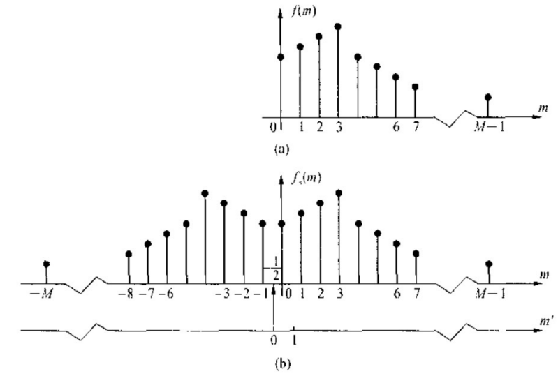
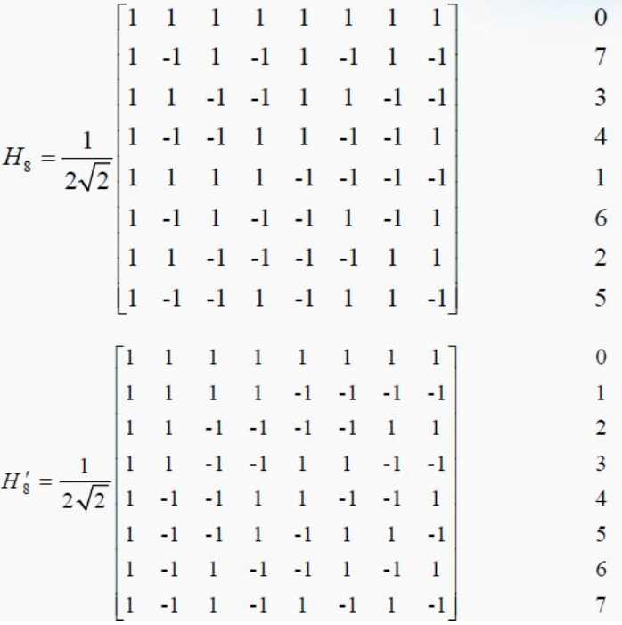
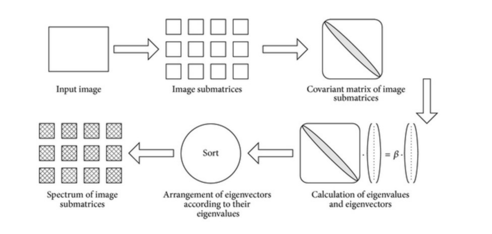
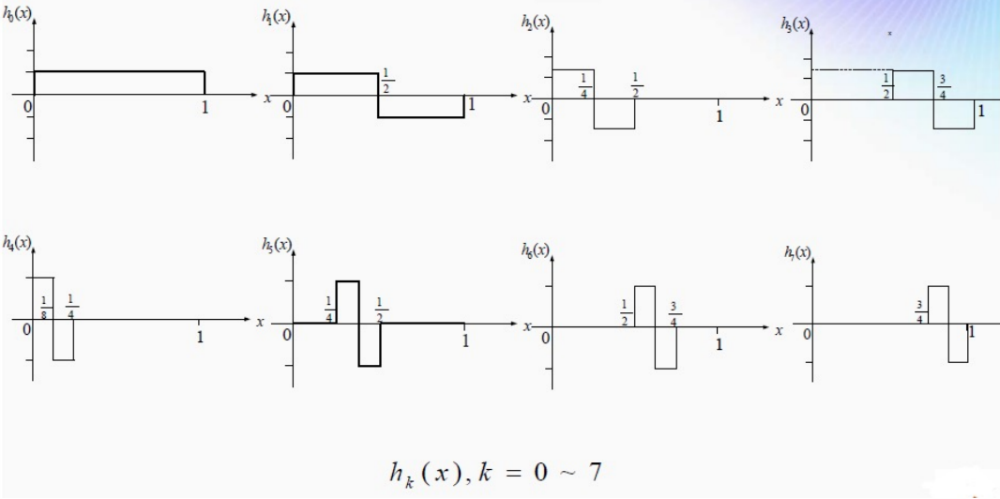
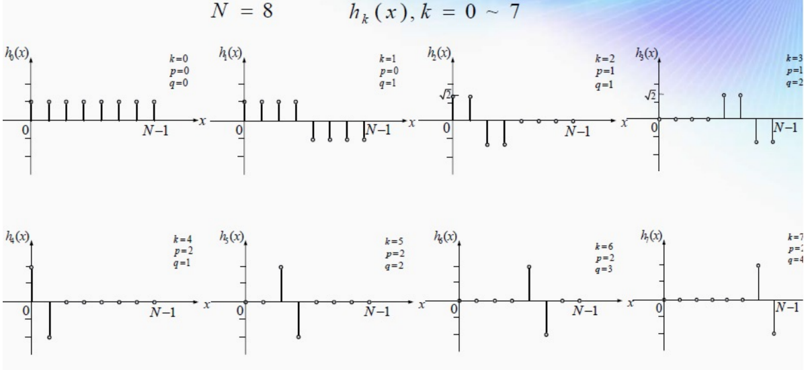
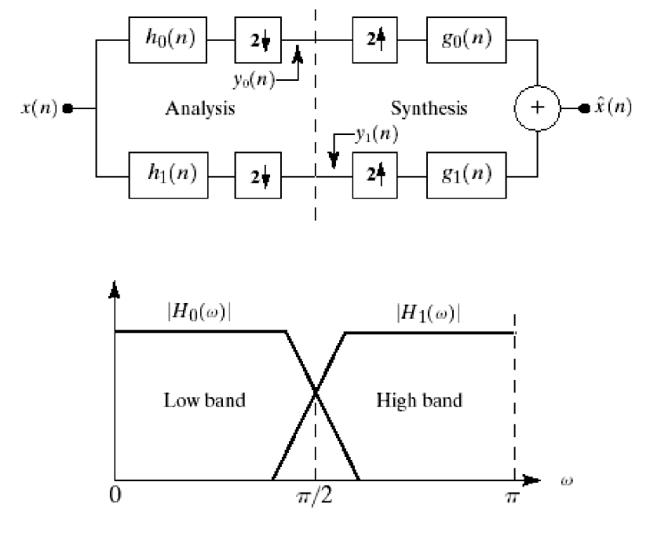
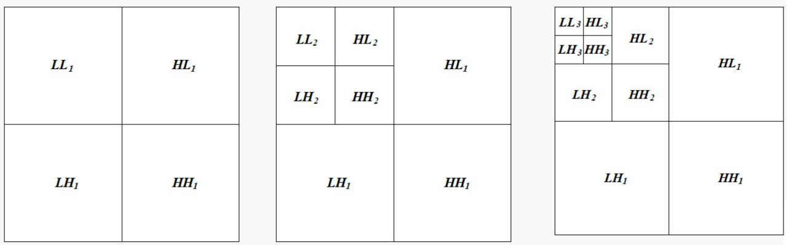

数字图像处理(3)：图像的二维变换
Last updated on December 30, 2025 pm
这是SJTU-CS3324《数字图像处理》课程的知识点整理系列。本文整理部分为“第 3 章：图像的二维变换”。
本章涉及较多数学公式和推导，不想看可以直接看每一小节最后的省流版，重点掌握这些变换的思想、功能、特点、用处等即可。
介绍 (Introduction)
图像变换的本质是将图像从空间域 (Spatial Domain) 转换到一个新的变换域 (Transform Domain)。在空间域，我们关注的是“像素在哪个位置”；而在变换域，我们关注的是“图像由哪些基础成分构成”。这样做是为了在变换域中更方便地分析和处理图像信息。
图像变换的应用概览 (Applications of Image Transforms)
- 二维离散傅里叶变换 (2D Discrete Fourier Transform - DFT):
- 主要用途: 图像增强、滤波、去噪、复原
- 核心领域: 频域分析与处理
- 二维离散余弦变换 (2D Discrete Cosine Transform - DCT):
- 主要用途: 图像压缩
- 核心领域: 能量聚集
- 沃尔什-哈达玛变换 (Walsh-Hadamard Transform):
- 主要用途: 图像压缩
- 核心领域: 快速、无乘法计算
- K-L变换 (Karhunen-Loeve Transform):
- 主要用途: 理论上性能最佳的变换
- 核心领域: 统计学上的最优性、模式识别
- 哈尔变换 (Haar Transform):
- 主要用途: 图像增强、压缩
- 核心领域: 最简单的一种小波变换
- 小波变换 (Wavelet Transform):
- 主要用途: 图像增强、压缩、多分辨率处理、分割、描述
- 核心领域: 时频（空频）局部化分析
图像变换的通用数学框架 (2D Transform of Image)
这部分为所有二维线性变换建立了一个统一的数学模型。
- 前向变换 (Forward transform):
- 思想: 将原始图像 转换为一个系数矩阵
- 通用公式:
- 核心概念:
- : 原始图像矩阵
- : 变换后的系数矩阵
- 每一个系数 都是原始图像所有像素 的一个线性组合
- : 前向变换核 (Forward Transform Kernel)
- 它定义了一种变换，不同的变换就是由不同的变换核 决定的
- 反向变换 (Inverse Transform):
- 思想: 从系数矩阵 无损地恢复出原始图像
- 通用公式:
其中 是反向变换核
可分离变换及其矩阵表示 (Separable Transforms & Matrix Representation)
- 可分离性 (Separability):
- 问题: 通用变换核 是一个四维函数，直接计算非常复杂
- 定义: 如果一个变换核可以表示为两个一维函数的乘积，则称其为可分离的
- 重要性: 本章讨论的大多数实用变换（如 DFT, DCT, WHT, Haar）的变换核都是可分离的，这极大地简化了计算
- 矩阵表示: 对于可分离变换，复杂的双重求和可以简化为矩阵乘法，这在计算上非常高效
- 前向变换：
- 反向变换:
其中 是原始图像矩阵， 是系数矩阵， 和 是由一维变换核构成的变换矩阵
- 这个矩阵形式意味着可以先用 对 的每一行进行变换，再用 对结果的每一列进行变换
- 前向变换：
- 正交变换 (Orthogonal Transform):
- 定义: 如果变换矩阵 和 都是正交矩阵（即 ），则该变换称为正交变换
- 优点: 正交矩阵的逆等于其转置 ()，这使得反向变换的计算变得极其简单：
这种特性保证了变换过程的数值稳定性
不可分离变换的处理：堆叠 (Stacking for Non-Separable Transforms)
- 问题: 如果变换核不可分离（如 K-L 变换），如何用矩阵形式表示
- 解决方法：堆叠 (Stacking)
- 思想: 这是一种理论上的表示方法，通过将二维矩阵“拉直”成一维长向量来处理
- 过程:
- 将 M×N 的图像矩阵 和系数矩阵 分别堆叠成 MN×1 的向量 和
- 四维变换核 相应地变成一个巨大的 (MN)×(MN) 的二维变换矩阵
- 最终形式:
- 局限性:
- 堆叠方法虽然理论上可行，但因需要巨大的内存来存储矩阵 ，所以在实际计算中并不可行
- 这也凸显了可分离变换在实践中的重要性
二维离散傅立叶变换 (2D Discrete Fourier Transform - DFT)
傅里叶级数 (Fourier Series)
- 核心思想: 任何一个周期性的函数，都可以被展开（或分解）为一系列不同频率的正弦/余弦波（或等价的复指数函数）的加权和
- 基函数:
- 正弦/余弦信号 (/):
- 周期复指数信号 (): 根据欧拉公式 ，一个复指数函数同时包含了正弦和余弦
- 傅里叶级数展开: 一个周期为 的函数 可以表示为：
其中 是基波频率， 是每个频率分量 的傅里叶系数，代表了该频率分量的“权重”或“幅度”
- 从傅里叶级数到傅里叶变换 (From Fourier Series to Fourier Transform):
- 当信号是周期函数时，其频谱是离散的（傅里叶级数）
- 如果我们将信号的周期 逐渐增大，其频谱中的谱线间隔 就会越来越小，谱线越来越密集
- 当周期 趋于无穷大时，原信号就变成了非周期函数，其频谱中的谱线间隔趋于零，离散的谱线就变成了连续的频谱曲线
- 这个过程就从傅里叶级数演变成了傅里叶变换 (Fourier Transform)
傅里叶变换 (Fourier Transform)
- 思想: 将一个非周期信号 分解为连续频率的正弦/余弦波的叠加
- 变换对 (Transform Pair):
- 前向变换 (FT):
- 反向变换 (IFT):
- 前向变换 (FT):
- 离散傅里叶变换 (Discrete Fourier Transform - DFT): 在计算机中，我们处理的是离散的、有限长度的信号
- DFT 是傅里叶变换在这种情况下的形式，积分变成了求和：
- 前向变换 (DFT):
- 反向变换 (IDFT):
二维离散傅里叶变换 (2D-DFT)
这是本节的核心，将一维 DFT 的概念扩展到二维图像。
定义
- 核心思想: 任何一张二维图像 都可以被表示为一系列不同频率、不同方向的二维正弦平面波 (Sinusoidal Waves) 的叠加
- 二维正弦平面波:
- 在 平面上表现为一组等间距的平行条纹
- 频率由 决定， 越大，频率越高，条纹越密集
- 方向由 的比值决定
- 变换对:
- 前向变换 (Forward):
- 反向变换 (Inverse):
- 前向变换 (Forward):
频谱的表示与分析
- 复数系数 (Complex Coefficients): DFT 的输出 是一个复数矩阵，每个元素都包含实部和虚部
- 极坐标表示 (Polar Coordinates): 为了便于分析，通常将复数 转换为极坐标形式：
并分别分析：
- 幅度/频谱 (Magnitude/Spectrum):
- 和 分别是 的实部和虚部
- 幅度谱表示了对应频率 的正弦平面波在原始图像中的能量或贡献强度
- 通常我们看到的“频谱图”就是对幅度谱进行对数变换和中心化后的可视化结果
- 相位/相位谱 (Phase Angle/Phase Spectrum):
- 相位谱描述了每个正弦平面波在空间上的位置或偏移
- 功率谱 (Power Spectrum):
- 幅度/频谱 (Magnitude/Spectrum):
- 相位的重要性 (The Importance of Phase Information): 相位谱决定了图像的结构信息，而幅度谱更多地影响图像的对比度和明暗
2D-DFT 的性质 (Properties of 2D-DFT)
- 线性 (Linearity): DFT 是一个线性算子
- 数学表达: 如果 且 ，那么对于任意常数 和 ：
- 意义: 这意味着对多张图像的线性组合进行变换，其结果等于它们各自变换结果的相同线性组合
- 这个性质保证了我们可以将复杂的图像分解为多个简单部分，分别进行频域分析后再合并
- 可分离的变换核 (Separable Transform Kernel): 2D-DFT 的变换核 是可分离的
- 数学表达:
- 意义: 这一性质使得二维 DFT 可以被分解为两步一维 DFT 来高效计算
- 先对图像的每一行进行一次一维 DFT
- 再对上一步得到的结果矩阵的每一列进行一次一维 DFT
- 这种分解极大地降低了计算复杂度，使得快速傅里叶变换（FFT）算法可以在二维上高效应用
- 周期性 (Periodic Repetition): DFT 及其反变换都具有周期性
- 数学表达:
- 在频率域：
- 在空间域：
其中 和 为任意整数
- 意义与直观理解: DFT 在数学上将一张有限大小的 M×N 图像视为一个在二维平面上无限重复平铺的图案
- 同样，它的频谱 也是一个无限周期性平铺的矩阵
- 数学表达:
- 共轭对称性 (Conjugated Symmetry):
- 定义: 对于任意实数输入图像 ，其 DFT 结果 具有共轭对称性
- 数学表达:
其中 表示复共轭
- 结合周期性，这个公式也可以写成：
- 意义:
- 冗余性: 这个性质意味着频谱的幅度是中心对称的 ，相位是中心反对称的
- 因此，频谱的一半信息是冗余的，只需要计算并存储大约一半的系数，就可以恢复出完整的频谱
- 实数存储: 一个 M×N 的复数 DFT 结果，可以被无损地用 M×N 个实数来表示和存储
- 实数点: 由于对称性，频谱图中的四个点——原点 、 轴中心点 、 轴中心点 和对角中心点 ——它们的虚部必定为零，是纯实数
- 冗余性: 这个性质意味着频谱的幅度是中心对称的 ，相位是中心反对称的
- 卷积定理 (Convolution Theorem): 这是 DFT 在图像处理中应用最广泛、最核心的性质，它在空间域的卷积运算和频率域的乘法运算之间建立了直接的桥梁
- 数学表达:
- 空间域卷积 频率域乘积:
- 空间域乘积 频率域卷积:
- 意义: 它将空间域中计算非常复杂的卷积操作（如用滤波器核进行平滑或锐化），转换成了频率域中对应元素逐点相乘的简单操作
- 这正是所有频域滤波技术的理论基础
- 数学表达:
- 位移定理 (Shift Theorem): 图像在空间域的平移与其在频率域的相位移动相对应
- 数学表达:
- 意义:
- 幅度谱不变性: 空间平移不会改变图像的傅里叶幅度谱
- 这意味着，无论一个物体出现在图像的哪个位置，它的能量频谱（包含纹理、结构等信息）是不变的，这个特性在模式识别中非常有用
- 相位变化: 所有的平移信息都被编码到了相位谱中，表现为一个线性的相位偏移
- 幅度谱不变性: 空间平移不会改变图像的傅里叶幅度谱
总结 (Takeaway)
- 思想: 任何图像都可以被表示为一系列不同频率、振幅和方向的正弦波的叠加
- DFT 的作用就是找出构成原始图像的这些基础正弦波成分
- 功能: 将图像从其常规的空间域转换到频率域
- 变换后的结果是一个复数矩阵，包含了幅度谱（Magnitude/Spectrum）和相位谱（Phase Spectrum）
- 相位谱包含了图像的主要结构信息
- 特点:
- 线性 (Linearity): DFT 是一个线性变换
- 这意味着对两个图像的加权和进行变换，其结果等于它们各自变换结果的加权和
- 可分离的变换核 (Separable Transform Kernel): 2D-DFT 的变换核可以分解为两个一维变换核的乘积
- 这意味着可以先对图像的每一行做一维 DFT，再对结果的每一列做一维 DFT，这大大提高了计算效率
- 周期性 (Periodic Repetition): DFT 隐含地假设图像是无限周期性平铺的
- DFT 将输入图像和其频谱都视为无限的周期函数
- 共轭对称性 (Conjugated Symmetry): 对于实数图像，其 DFT 结果具有共轭对称性
- 这导致了一定的数据冗余，只需要一半的系数就可以恢复整个频谱
- 卷积定理 (Convolution Theorem): 两个函数在空间域的卷积等价于它们各自的傅里叶变换在频率域的乘积，反之亦然
- 位移定理 (Shift Theorem): 如果将原始图像在空间域平移，其幅度谱不会改变，但其相位谱会产生一个线性的相移
- 线性 (Linearity): DFT 是一个线性变换
- 用途: 图像增强、滤波、去噪、复原
- 基于卷积定理，复杂的滤波、去噪、增强和图像复原操作可以在频率域通过简单的乘法来完成
二维离散余弦变换 (2D Discrete Cosine Transform - DCT)
从一维 DFT 到一维 DCT (From 1D-DFT to 1D-DCT)
- 思想: 对于一个长度为 的实数序列 ，可以通过构造一个长度为 的、具有偶对称性的新序列 ，然后对这个新序列进行 DFT，最终得到的结果只包含余弦项，这就是 DCT 的本质

- 推导过程:
- 将原始序列 进行镜像扩展，构造一个新的、对称的序列
- 对这个新的对称序列 应用 DFT 公式
- 由于对称性，DFT 公式中的 项可以与 项合并
- 根据欧拉公式，最终结果中的虚部（正弦项）会完全抵消，只剩下实部（余弦项）
- 核心结论:
- 一个序列的 DCT，等价于这个序列与其镜像版本拼接后的 DFT
- 变换后的目标函数中只包含余弦因子 (Cosine factors)
离散余弦变换的定义 (Discrete Cosine Transform)
- 一维 DCT (1D-DCT):
- 前向变换:
- 反向变换:
- 系数 :
这个系数是为了保证变换矩阵是正交的
- 前向变换:
- 二维 DCT (2D-DCT): 由于 DCT 的变换核是可分离的，2D-DCT 可以直接从 1D-DCT 扩展而来
- 前向变换:
- 反向变换:
- 前向变换:
DCT 的优势与特点 (Advantages of DCT)
- 信息打包能力与计算复杂度的良好折中:
- 在能量聚集 (Energy Packing) 方面，DCT 的性能非常接近理论上最优的 KLT
- 但它的变换核是固定的，并且有多种快速算法，计算复杂度远低于 KLT
- 减少块效应 (Less Blocking Artifact):
- DFT 的问题: DFT 隐含的 N 点周期性，在对图像进行分块处理时，会导致块与块之间的边界出现不连续性 (Discontinuity)
- 这种不连续性在频率域会产生大量的高频分量，经过量化后，在重建图像时就会表现为恼人的块效应 (Blocking Artifact)
- DCT 的优势: DCT 隐含的是 2N 点周期性（因为它是由镜像扩展构造的）
- 这种构造方式天然地保证了扩展信号在边界处是平滑连续的，不会人为地引入边界不连续性
- 因此，使用 DCT 进行分块压缩，其块效应远小于 DFT
- DFT 的问题: DFT 隐含的 N 点周期性，在对图像进行分块处理时，会导致块与块之间的边界出现不连续性 (Discontinuity)
- 易于实现 (Easy to implement): 存在多种成熟且高效的快速 DCT 算法
- 应用: 基于以上优点，许多变换编码系统都基于 DCT（见第六章）
- 它是 JPEG、MPEG 等众多主流图像和视频压缩标准的核心技术
- 基函数对比: DCT 的基函数在图像块的边界处总是水平或垂直的，这种平滑的边界特性有助于减少块效应
总结 (Takeaway)
- 思想: DCT 与 DFT 密切相关，可以被看作是一个仅使用实数余弦函数作为基函数的变换
- 一个实数序列的DCT，等价于将该序列与其镜像版本拼接构成一个偶对称序列后，再对其进行DFT
- 这种构造方式避免了信号两端的边界不连续性
- 功能: 具有较强的能量聚集 (Better Energy Packing)能力
- 对于自然图像，DCT 能将信号的大部分能量集中到少数几个低频系数中
- 特点:
- 信息打包能力与计算复杂度的良好折中: 在能量聚集方面，它的性能非常接近理论上最优的 KLT，但计算复杂度远低于 KLT
- 减少块效应 (Less Blocking Artifact): 与 DFT 的 N 点周期性不同，DCT 隐含的是 2N 点周期性
- 这种特性使得在对图像分块处理时，块与块之间的边界不连续性大大减弱，从而有效抑制了压缩图像中常见的“块效应”
- 易于实现: 存在多种快速计算 DCT 的算法
- 用途: 图像压缩
- 许多变换编码系统（如 JPEG）都基于 DCT
- 利用其能量聚集特性，通过量化和丢弃大量高频系数来实现高压缩率
沃尔什-哈达玛变换 (Walsh-Hadamard Transform - WHT)
核心思想与定义
- 思想: 与使用平滑的正弦/余弦函数作为基函数的 DFT/DCT 不同，哈达玛变换使用一组由 +1 和 -1 构成的、相互正交的矩形波（方波）作为基函数
- 变换矩阵 (Transform Matrix): 变换的核心是哈达玛矩阵 (Hadamard Matrix)
- 这是一个 N×N 的方阵，其中 N 必须是2的整数次幂 ()
- 它具有一个递归（或称克罗内克积）生成方式
- 基础矩阵 ():
- 递归生成: 高一阶的哈达玛矩阵 可以由低一阶的矩阵 构建
- 基础矩阵 ():
哈达玛变换 vs. 沃尔什变换 (Hadamard vs. Walsh Transform)
这是两种密切相关但略有不同的 1D 变换，它们都属于 WHT 家族。
- 哈达玛变换 (Hadamard Transform): 使用自然顺序的哈达玛矩阵
- 矩阵的行是按照其递归生成顺序排列的，其变号频率（Sequency，即每行中符号从 +1 到 -1 或从 -1 到 +1 变化的次数）是无序的
- 沃尔什变换 (Walsh Transform): 使用排序后的哈达玛矩阵
- 其矩阵的行被重新排列，使得行的变号频率从低到高单调递增
- 这种排序使得变换系数的排列顺序更接近于傅里叶变换（从低频到高频），在分析和压缩时更有意义

- 变换公式:
- 前向变换:
- 反向变换:
- 由于 是对称且正交的，即 ，其前向和反向变换的矩阵是完全相同的
二维沃尔什-哈达玛变换 (2D Walsh Transform)
- 思想: 由于变换核是可分离的，2D-WHT 可以通过两次 1D-WHT 来实现
- 矩阵表示:
- 前向变换:
- 反向变换:
- 同样，由于变换矩阵的对称性，前向和反向变换的公式完全一样
- 名称区分: 沃尔什变换是使用沃尔什数的 WHT，哈达玛变换是使用哈达玛数的 WHT，它们都属于 WHT
特点与用途
- 核心特点:
- 无乘法运算: WHT 的最大优势在于其变换矩阵只包含 +1 和 -1（以及一个归一化因子）
- 这意味着整个变换过程只需要加法和减法，完全不需要乘法运算
- 计算极其高效: 这使得WHT的计算速度非常快，非常适合用简单的硬件来实现
- 无乘法运算: WHT 的最大优势在于其变换矩阵只包含 +1 和 -1（以及一个归一化因子）
- 用途: 主要用于图像压缩
- 尤其是在对计算速度要求极高，或者计算资源非常有限的场景下（如早期的嵌入式系统、硬件编码器等）
- 但其能量聚集能力不如 DCT，因此在通用图像压缩领域已被 DCT 取代
总结 (Takeaway)
- 思想: 使用哈达玛矩阵作为变换核
- 该矩阵的基函数是一系列由 +1 和 -1 构成的正交矩形波（沃尔什函数），而不是平滑的正弦或余弦波
- 功能: 分解图像信号，实现能量聚集
- 其变换矩阵可以通过递归方式生成，也可以通过重新排列行，使其基函数的变换频率按升序排列
- 特点:
- 无乘法运算: 其变换矩阵仅包含 +1 和 -1 ，因此整个变换过程只需要加减法，计算极其高效，非常适合硬件实现
- 用途: 图像压缩
- 特别是在计算能力受限的系统中
K-L变换 (Karhunen-Loeve Transform - KLT / PCA)
KLT 的特性与概述
- 核心思想: KLT 是一种基于数据统计特性的自适应变换
- 与 DFT、DCT 等使用固定基函数的变换不同，KLT 的变换基是为待处理的一组特定图像量身定做的，旨在找到最能表达这组图像特征的坐标系
- 别名: KLT 也被称为霍特林变换 (Hotelling Transform)、特征向量变换 (Eigenvector Transform) 或 主成分分析 (Principal Component Analysis, PCA)
- 用途: KLT 可以用于图像压缩和降维 (Dimension Reduction)
- 关键性质:
- 不可分离性: KLT 的变换核通常是不可分离的
- 最优性: 在均方误差 (MSE) 意义下，KLT 是性能最佳的变换
- 实践局限性: KLT 不适合用于实际的图像压缩算法
- 实现方式: 在 KLT 的数学推导和实现中，使用了堆叠 (Stacking) 的方法
KLT 的数学定义 (Definition of KLT)
KLT 的推导过程依赖于将图像视为高维随机向量，并利用线性代数工具进行分析。
- Step 1: 将图像视为随机向量
- 通过堆叠 (Stacking)，将一张 M×N 的数字图像 视为一个 MN×1 的随机向量
- 一个由 张观测图像组成的集合 ，可以看作是 个随机向量的样本
- Step 2: 计算统计特性
- 对于一个随机向量 ，其统计特性由期望（均值）向量 和协方差矩阵 描述
- 期望向量 (均值): ，可以用样本均值来近似：
- 协方差矩阵 (Covariance Matrix):
- 协方差矩阵 是一个 (MN)×(MN) 的方阵，它描述了图像集合中不同像素之间的相关性
- 可以用 来近似计算
- Step 3: 特征分解协方差矩阵
- 协方差矩阵 是一个实对称方阵，因此它拥有 MN 个相互正交的实数特征向量 和 MN 个实数特征值
- 特征向量和特征值满足定义式：
- 通常将特征值按降序排列：
- 这些特征向量 构成了描述这组图像数据的最优正交基
- Step 4: 构建 KLT 变换矩阵
- KLT 的变换矩阵 是由协方差矩阵 的所有特征向量 作为行向量构成的
- 由于特征向量是正交的，所以 是一个正交矩阵
- Step 5: KLT 变换的定义
- 前向变换: 将减去均值后的图像向量 ，投影到由变换矩阵 定义的新坐标系上，得到变换系数向量
- 反向变换:
KLT 的性质 (Properties of KLT)
- 变换系数的统计特性:
- 期望（均值）: 变换后的系数向量 的均值为零
- 协方差矩阵: 变换后的系数向量 的协方差矩阵 是一个对角矩阵 ，其对角线上的元素正是协方差矩阵 的特征值
- 核心功能: 去除冗余
- 是对角矩阵意味着，变换后的所有系数分量 之间是互不相关的 (uncorrelated)
- 因此，KLT 通过坐标系旋转，完全消除了原始数据各分量（像素）之间的相关性，从而去除了空间冗余
- 注意: KLT 本身不压缩数据，它只是对数据进行了一次坐标系旋转，消除了相关性
KLT 在图像压缩中的应用 (Using KLT in Image Compression)
- 能量聚集: 特征值 的大小，代表了数据在对应特征向量 方向上的方差（能量）
- 通常，将特征值从大到小排序后，前几个大的特征值就占据了数据总能量的绝大部分
- 降维与压缩:
- 我们可以只选择与前 个最大特征值 对应的 个特征向量，构成一个新的、更小的变换矩阵 (尺寸为 K × MN)
- 使用这个 进行变换 ，就将原始的 MN 维图像向量，降维到了一个 维的系数向量 ，从而实现了数据压缩
- 重建时，使用 进行反向变换：
- 最优性: 最小均方误差 (Smallest Mean Square Error)
- 误差大小: 重建误差 等于被舍弃掉的那些特征值之和
- 由于我们总是优先舍弃最小的特征值，所以 KLT 保证了在任何给定的压缩维度 下，它都能在所有线性变换中获得最小的均方误差

KLT 的局限性与 DCT 的优势
- KLT 不被广泛使用的原因:
- 变换核依赖于数据: 没有一个通用的 KLT 变换矩阵，必须为每一类图像重新计算
- 实现困难: 计算高维协方差矩阵及其特征分解，在计算上不可行
- 缺乏快速算法: 没有通用的快速算法
- DCT 成为主流的原因:
- 性能近似: 对于高度相关的图像（如大多数自然图像），DCT 的能量聚集能力非常接近理论最优的 KLT
- 变换核固定: DCT 的变换核是固定的，不依赖图像内容
- 存在快速算法: 有多种成熟的快速 DCT 算法
主成分分析 (Principal Component Analysis - PCA)
这部分从一个更广阔的统计学和机器学习视角重新审视了 KLT。
- 动机 (Why?):
- 发现潜在结构: 我们希望发现并操作那些无法被直接观测到的、控制着数据的潜在因子
- 处理高维数据: 当数据维度过高时，难以分析、可视化，并且包含大量噪声，我们需要进行降维 (Dimension Reduction)
- 核心思想 (Basic Concept):
- 数据中方差最大的方向，是信号最强、最能区分不同样本的方向
- 如果某些变量高度相关，它们很可能反映了同一个潜在现象，可以被合并
- PCA 的目标就是找到一个新的、由不相关的变量（主成分）构成的坐标系，来更紧凑、更深刻地表示原始数据
- 主成分 (Principal Components):
- 第一主成分 (PC1): 数据方差最大的投影方向
- 第二主成分 (PC2): 与 PC1 正交（不相关）的前提下，数据方差次之的方向
- 以此类推，找到一组相互正交的基，它们按方差大小依次排列
- 数学本质 (Computing the Components): 寻找使投影方差 最大的方向 ，这在数学上被证明等价于寻找数据协方差矩阵 的主特征向量 (Principal Eigenvector)
- 特征向量 定义了主成分的方向
- 对应的特征值 定义了数据在该方向上的方差大小
- 经典应用：特征脸 (Eigenface)
- 思想: 将大量人脸图像（每个都拉直为向量）作为一个数据集，对其进行 PCA/KLT
- 均值脸 (Mean face): 数据集的平均向量
- 特征脸 (Eigenfaces): 计算出的协方差矩阵的特征向量
- 这些特征脸看起来像幽灵一样的面孔，它们构成了表示所有人脸的“主成分脸”
- 人脸识别/检测: 任何一张新的人脸，都可以通过减去均值脸，然后投影到最重要的少数几个特征脸上，得到一组权重系数
- 这组系数就是这张脸的紧凑表示，可以用于识别和分类
- PCA 的局限性:
- PCA 寻找的是不相关且正交的基，且其假设数据主要服从高斯分布
- 对于非高斯分布的数据，或需要寻找统计独立而非仅仅不相关的基时，独立成分分析 (Independent Component Analysis, ICA) 可能是更好的选择
总结 (Takeaway)
- 思想: 一种基于数据统计特性的自适应变换，也称为主成分分析（PCA）或 Hotelling 变换
- 它不使用固定的基函数，而是根据输入的一组图像样本，计算其协方差矩阵，并使用该矩阵的特征向量作为最优的变换基
- 功能:
- 数据去相关: KLT 能完全消除变换后各分量之间的相关性
- 降维: 通过选取与较大特征值对应的少数几个特征向量构成新的变换矩阵，可以在**最小均方误差（MSE）**的意义下，将高维数据投影到低维空间，同时最大程度地保留原始信息
- 特点:
- 理论上最佳: 在所有线性变换中，KLT 在能量聚集和去相关方面具有理论上最优的性能
- 数据依赖性: 变换核（基函数）是为特定数据集量身定做的，不具有普适性
- 计算复杂: 需要计算协方差矩阵和特征向量，没有通用的快速算法，且变换核通常是不可分离的
- 用途: 图像压缩（理论上）和降维
- 在实践中，由于其复杂性，主要用于模式识别和特征分析，如人脸识别
哈尔变换 (Haar Transform)
- 思想: 哈尔变换使用一组极其简单的、由阶跃函数（方波）构成的正交基函数来分解信号
- 地位:
- 一种特殊的小波变换: 哈尔变换是一种特殊的小波变换
- 最古老、最简单: 它的基函数是最古老且最简单的正交归一化小波
哈尔基函数 (Haar Basis Functions)

- 定义域: 基函数 定义在连续区间 上，其中 ，且 必须是2的幂
- 参数化: 为了生成第 个基函数，需要将索引 分解为两个参数 和
其中：
- (scale): 尺度参数，控制基函数的宽度； 越大，基函数越窄
- (position): 位置参数，控制基函数在区间 上的位置
- 函数形式:
- 第一个基函数 ():
- 这是一个常数函数，代表了信号的平均值或直流分量
- 其他基函数 (): ，它们都是由一对一正一负的矩形脉冲构成。
- 在某个子区间内，函数值为
- 在紧邻的另一个子区间内，函数值为
- 在其他所有位置，函数值为 0
- 第一个基函数 ():
- 基函数的特性:
- 形状: 除了第一个 是常数外，所有其他基函数都是矩形脉冲对
- 多尺度特性:
- 宽度递减: 随着 的增加（即 的增加），脉冲的宽度按 的规律变窄
- 高度递增: 相应地，脉冲的高度按 的规律变高，以保持能量归一化
- 位置变化: 对于同一个尺度 ，不同的 值对应着脉冲在不同位置的平移
- 与小波的联系: 这些宽度、高度、位置均不同的特性，正体现了小波变换的基本思想
哈尔变换矩阵
- 变换的矩阵表示: 对于一个 N×N 的图像矩阵 ，其二维哈尔变换可以表示为：
其中：
- : 原始的 N×N 图像矩阵
- : N×N 的哈尔变换矩阵
- : 变换后得到的 N×N 系数矩阵
- 变换矩阵与基函数的关系: 哈尔变换矩阵 H 的第 行，包含了第 个哈尔基函数 在 个离散点 上的采样值
- 以 的哈尔变换矩阵为例，包含了不同尺度和位置的基函数，从而捕捉图像在不同尺度和位置的细节信息

- 可分离性: 哈尔变换的核是可分离的
- 因此，二维哈尔变换可以像 DFT/DCT 一样，通过先后对图像的行和列进行一维哈尔变换来高效计算
总结 (Takeaway)
- 思想: 使用最简单、最古老的正交小波作为基函数
- 这些基函数是一系列具有不同尺度、位置和幅度的矩形脉冲对
- 功能: 将图像分解为不同尺度和位置的成分
- 变换矩阵 包含了 Haar 基函数在离散点上的采样值
- 特点:
- 小波变换的特例: Haar 变换是一种特殊的小波变换
- 可分离性: 其变换核是可分离的
- 计算简单: 是实现最简单的小波变换
- 用途: 图像增强、压缩
小波变换 (Wavelet Transform - WT)
- 思想:
- 基于小波: 小波变换是基于一类被称为小波 (Wavelets) 的函数，这些函数具有有限的宽度和振荡性
- 多分辨率分析: 小波理论是多分辨率分析 (Multi-resolution Analysis) 的数学基础
- 其核心优势在于能够从多分辨率的视角 (multi-resolution point of view) 来审视和分析图像
- 这意味着，在某个分辨率下难以察觉的特征，在另一个分辨率下可能很容易被发现
- 功能与应用:
- 小波变换使得压缩、传输和分析图像变得更加容易
- 可广泛应用于图像增强、图像压缩、图像分割、图像描述等领域
- 统一理论: 多分辨率理论统一了来自不同领域的技术，如信号处理中的子带编码 (Sub-band Coding)、语音识别中的正交镜像滤波 (Quadrature Mirror Filtering)，以及图像处理中的图像金字塔 (Pyramidal Image Processing)
A. 连续小波变换 (Continuous Wavelet Transform)
波 (Wave) 与小波 (Wavelet)
- 波 (Wave): 指像正弦波 (sine waves) 那样在定义域上无限延伸的函数
- DFT 的基函数就是这种波
- 小波 (Wavelet): 指宽度有限的波，它在局部区域振荡，然后迅速衰减至零
- Haar 变换的基函数就是一种最简单的小波
- 傅里叶变换 vs. 小波变换:
- 傅里叶变换: 将信号分解为一系列不同频率的正弦波的叠加，它只提供频率信息
- 小波变换: 将信号分解为一系列由母小波经过伸缩和平移后得到的、不同尺度和位置的小波的叠加
- 它能同时提供频率（尺度）和时间（位置）的局部信息
母小波函数 (Basis Wavelet Function)
- 定义: 一个函数 要想成为一个母小波，必须满足容许性准则 (Admissibility Criterion)，即
其中 是 的傅里叶变换
- 推论性质: 为了满足容许性准则，母小波 必须具备以下特性：
- 波动性 (Fluctuation): 函数的积分为零 ，且
- 这意味着它必须有正有负，不能是纯直流分量
- 衰减性 (Attenuation): 函数必须在无穷远处衰减至零，即 as
- 带通性 (Band-pass): 其频谱 必须是一个带通函数，在零频率和无穷频率处都衰减至零
- 即 as or
- 波动性 (Fluctuation): 函数的积分为零 ，且
连续小波 (Continuous Wavelet)
- 思想: 通过对一个母小波 进行伸缩和平移，可以生成一个连续小波函数集
- 被称为连续小波 (continuous wavelet) 或小波函数 (wavelet function)
- 参数:
- (尺度参数, Scale Parameter): 控制小波的伸缩
- 越大，小波越胖，用于分析低频
- 越小，小波越瘦，用于分析高频
- (平移参数, Translation Parameter): 控制小波在 轴上的位置
- (尺度参数, Scale Parameter): 控制小波的伸缩
连续小波变换 (Continuous Wavelet Transform - CWT)
- 思想: 将一个信号 表示为一个由连续小波函数 构成的函数集的加权和
- 变换对:
- 前向变换: 计算了在尺度 和位置 上，信号 与小波 的相似程度
- 反向变换:
- 前向变换: 计算了在尺度 和位置 上，信号 与小波 的相似程度
B. 离散小波变换 (Discrete Wavelet Transform)
这一部分是将连续小波变换理论转化为计算机可处理的离散形式的关键。
离散小波函数 (Discrete wavelet function)
- 思想: 从连续小波函数 出发，对尺度参数 和平移参数 进行离散化
- 离散化方法: 通常采用指数离散化的方式
其中 , 是固定的采样步长， 和 是整数
- 离散小波函数: 将离散化的 和 代入，得到离散小波函数族
- 变换对: 使用这组离散的基函数 ，我们可以定义信号 的小波级数展开
- 前向变换 (分析): 计算小波系数 ，它表示了信号 与基函数 的内积（相似度）
- 反向变换 (综合): 通过所有小波系数 对其对应的基函数 进行加权求和，来重构原始信号
- 前向变换 (分析): 计算小波系数 ，它表示了信号 与基函数 的内积（相似度）
- 离散小波变换 (DWT): 当被分析的信号本身也是离散的 时，上述的积分和连续变量 就相应地变成了求和与离散变量 ，这就得到了离散小波变换 (DWT) 的正式定义
- 前向变换:
- 反向变换:
- 前向变换:
二进小波 (Dyadic Wavelet)
-
定义: 这是在实践中最常用的一种离散化方案，它选择 和
-
二进小波函数: 在这种情况下，离散小波函数的形式变为
-
二进小波变换: 相应的变换对也就变成了
- 前向变换:
- 反向变换:
- 前向变换:
-
离散小波变换的实现: DWT 的高效实现依赖于由 Mallat 提出的快速小波变换 (Fast Wavelet Transform, FWT) 算法
- FWT 算法使用了子带分解与重组 (Subband Decomposition & Recombination)
C. 图像金字塔 (Image Pyramids)
- 思想: 图像金字塔是一种功能强大且概念简单的结构，用于在多个分辨率 (more than one resolution) 下表示同一张图像
- 定义: 一个图像金字塔是由一系列不同分辨率的图像组成的集合，这些图像按分辨率大小排列，形似金字塔
- 金字塔的底部 (Base): 是原始的高分辨率图像
- 金字塔的顶部 (Peak): 是尺寸最小的低分辨率近似图像
- 用途: 用于图像压缩和图像分析
高斯金字塔 (Gaussian Pyramid)
- 思想: 构建一系列尺寸递减、模糊度递增的图像，代表了原始图像在不同尺度下的近似 (Approximation)
- 这模拟了我们人眼从近到远观察一个物体的效果，越远看到的物体越小、越模糊
- 构建过程: 这是一个迭代的过程，从最底层的原始图像 开始，生成上一层的 ，再由 生成 ，依此类推。每一步都包含两个操作：
- 滤波 (Filtering): 使用一个低通滤波器（通常是高斯核或其近似，如 ）对当前层级的图像 进行卷积
- 这一步的目的是平滑图像，去除高频细节，以防止下一步降采样时产生混叠（Aliasing）
- 降采样 (Downsampling): 对滤波后的图像进行降采样（丢弃偶数行和偶数列），使其尺寸变为原来的 1/4，得到上一层图像
- 滤波 (Filtering): 使用一个低通滤波器（通常是高斯核或其近似，如 ）对当前层级的图像 进行卷积
- 特点:
- 金字塔中的每一层都是其下一层图像的低分辨率近似版本
- 一个完整的高斯金字塔的数据量大约是原始图像的 4/3，因此高斯金字塔存在 1/3 的数据冗余
拉普拉斯金字塔 (Laplacian Pyramid)
- 思想: 拉普拉斯金字塔中存储了高斯金字塔层间丢失的细节，也被称为残差金字塔
- 构建过程: 拉普拉斯金字塔的构建依赖于已经建好的高斯金字塔
- 取高斯金字塔中的较小层
- 上采样/扩展 (Expand/Upsampling): 将 的尺寸放大一倍，使其与下一层 的尺寸相同
- 这通常通过插入零值行列再进行插值滤波来完成
- 得到的结果 是 的一个模糊预测版本
- 计算差值: 用高斯金字塔中较清晰的图像 减去这个模糊的预测版本，得到的差值就是拉普拉斯金字塔的当前层
- 这个差值图像 就包含了从 降采样到 过程中丢失的高频细节信息，它看起来就像一张边缘图
- 特点:
- 可完美重构: 拉普拉斯金字塔（包含所有差值层 和高斯金字塔的最小顶层 ）可以无损地恢复出原始图像
- 重构过程就是构建过程的逆运算：
- 数据稀疏性: 层中的大部分像素值都非常接近于零，只有在边缘和纹理区域才有较大的值
- 这种稀疏性使得拉普拉斯金字塔非常适合进行量化和熵编码，可以用于图像压缩
- 可完美重构: 拉普拉斯金字塔（包含所有差值层 和高斯金字塔的最小顶层 ）可以无损地恢复出原始图像
D. 子带编码 (Subband Coding)
核心思想与定义
- 应用背景: 子带编码是为语音和图像压缩而发展起来的技术
- 核心思想: 将一个图像（或信号）分解 (decomposed) 为一组带宽受限 (band-limited) 的分量，这些分量被称为子带 (subbands)
- 关键特性:
- 可重组性: 这些子带可以被重新组合（reassembled）起来，以无误差地重建出原始图像
- 滤波生成: 每个子带都是通过对输入信号进行带通滤波 (bandpass filtering) 生成的
- 下采样 (Downsampling):
- 原理: 由于每个子带都是经过带通滤波得到的，其带宽比原始图像的带宽要窄
- 应用: 根据采样定理，一个带宽变窄的信号，可以用一个更低的采样率来表示而不丢失信息
- 因此，分解出的子带可以被下采样 (downsampled)
- 目的: 下采样是实现数据压缩的关键步骤，因为它减少了需要表示的样本总数
- 重建 (Reconstruction): 原始图像的重建过程是分解的逆过程
- 通过对各个子带进行上采样 (upsampling)、滤波，然后将它们相加来完成
双通道滤波器组 (Two-band Filter Bank)
通过一个一维信号的双通道滤波器组来展示子带编码的具体实现。

- 分析部分 (Analysis):
- 滤波: 输入信号 同时通过一个低通滤波器 和一个高通滤波器
- 下采样: 两个滤波器的输出分别经过一个因子为 2 的下采样器，得到低频子带信号 和高频子带信号
- 频谱分裂: 和 的频率响应 和 分别覆盖了 和 的频段，实现了频谱的一分为二
- 综合部分 (Synthesis):
- 上采样: 将接收到的子带信号 和 分别通过一个因子为 2 的上采样器（即在样本之间插入 0）
- 滤波: 上采样后的信号分别通过对应的综合（重构）滤波器 和
- 求和: 将两个滤波器的输出相加，得到重建信号
- 完美重构: 如果这四个滤波器 , , , 经过精心设计，就可以使得重建信号 与原始信号 完全相同
二维子带编码
- 实现: 由于滤波器是可分离的，二维子带编码可以通过两次一维子带编码来实现
- 行处理: 首先对图像的每一行进行一次双通道分解，得到一个低频图像 和一个高频图像
- 列处理: 然后对 和 的每一列再分别进行一次双通道分解
- 四通道分解: 最终，原始图像被分解为四个尺寸为其 1/4 的子带图像
- LL: 对行和列都进行低通滤波，代表图像的近似/概貌
- LH: 对行低通、对列高通，代表图像的水平细节（垂直边缘）
- HL: 对行高通、对列低通，代表图像的垂直细节（水平边缘）
- HH: 对行和列都进行高通滤波，代表图像的对角线细节
- 递归分解: 这个分解过程可以递归地在 LL 子带上继续进行，从而实现多级的、金字塔式的分解结构，这正是小波变换的核心

- 子带分解的性质 (与图像金字塔对比):
- 无冗余 (No Redundancy): 一个标准的子带分解，其所有子带的像素总数与原始图像完全相同，没有数据冗余
- 方向性 (Directional): 二维子带分解能够将图像细节分离到水平、垂直和对角线三个方向的子带中，提供了金字塔所不具备的方向信息
- 完美重构 (Reassembled without error): 可以无损地重建原始图像
- 设计复杂: 设计一套能够实现完美重构的滤波器组具有高灵活性和高难度
E. 多分辨率分析与图像小波变换 (Multiresolution Analysis & Wavelet Transform of Images)
Mallat 将小波变换、多分辨率分析和子带分解这几个概念融合在了一起。
-
核心结论: 小波变换是子带分解/重组的一个例子
- 快速小波变换 (FWT) 的实现，在数学上就等价于一个精心设计的双通道子带编码/解码滤波器组
-
滤波器与小波的关系: 在这个统一的框架中，子带编码中的高通滤波器 和低通滤波器 之间存在着精确的数学关系（正交镜像关系），它们共同定义了其背后的小波函数
-
分解步骤:
- 行变换: 对图像的每一行进行一次一维离散小波变换（即通过 和 滤波器进行一次子带分解），得到图像的低频分量(L)和高频分量(H)
- 列变换: 接着对上一步得到的 L 和 H 的每一列再进行一次一维离散小波变换，得到 LL、LH、HL、HH
-
分解结果: 经过行、列两步分解后，原始图像 （ 尺度下的近似）被分解为四个子图像（子带），尺寸均为原来的一半
- (LL): 近似分量，由行、列两次低通滤波得到，是原始图像在更粗糙尺度 上的一个近似
- (HL): 垂直细节分量，由行高通、列低通得到，主要包含水平方向的边缘信息
- (LH): 水平细节分量，由行低通、列高通得到，主要包含垂直方向的边缘信息
- (HH): 对角线细节分量，由行、列两次高通得到，主要包含对角线方向的边缘信息
-
数学表示:
- 二维尺度函数: (对应 LL 子带)
- 二维小波函数:
- (对应 LH 子带)
- (对应 HL 子带)
- (对应 HH 子带)
-
分解 (Decomposing): 一次小波变换的过程，就是将一个近似图像 分解为一个更粗糙的近似图像 和三个方向的细节图像 (, , )。
-
重组 (Reassembling): 这个过程是完全可逆的，通过对四个子带进行上采样和相应的综合滤波，可以无损地重构出上一级的近似图像
-
多级分解结构 (Results):
- 递归分解: 实际应用中，上述分解过程会递归地在每一次新产生的近似分量 (LL) 上进行
- 子图像总数: 如果进行了 $J4 级分解，最终会得到 个子图像
- 个不同尺度和方向的细节子图像
- 个尺寸最小的最终近似子图像
-
多级小波分解后的典型图像结构: 左上角是尺寸最小的近似图像，其他区域则按层级和方向（水平、垂直、对角）排列着所有的细节子图像
- 这种结构非常有利于进行图像压缩和分析
总结 (Takeaway)
- 思想: 使用具有有限宽度和振荡特性的小波（Wavelet） 作为基函数来分解信号
- 与 DFT/DCT 使用无限长的三角函数基不同，小波基在空间上是局部化的，这使得它能同时捕捉信号的频率信息和空间位置信息
- 功能:
- 多分辨率分析 (Multi-resolution Analysis): 小波变换能将图像分解为不同层次的近似（低频）和细节（高频）子带(Subbands)，每个子带都同时包含了特定频率（尺度）和特定空间位置的信息
- 子带编码 (Subband Coding): Mallat 提出的快速小波变换（FWT）算法，通过一系列高通和低通滤波器组，将图像分解为一个近似分量和多个细节分量，来实现子带分解和重构
- 二维分解过程:
- 先对图像的每一行进行一维小波变换，得到低频（L）和高频（H）部分
- 再对结果的每一列进行一维小波变换，最终得到四个子图像：
- LL: 近似分量（原图的低分辨率缩略版）
- LH: 水平方向的细节（垂直边缘）
- HL: 垂直方向的细节（水平边缘）
- HH: 对角线方向的细节
- 这个分解过程可以递归地对 LL 分量不断进行，从而得到一个多层次的、金字塔式的分解结构
- 若子带的带宽小于原图像，则无信息损失
- 二维分解过程:
- 特点:
- 时频局部化: 能有效地表示图像中的非平稳信号，如边缘、尖峰和纹理等局部特征
- 无冗余性: 与图像金字塔相比，标准的子带分解没有数据冗余
- 方向性: 2D 小波变换能将图像分解为水平、垂直和对角线三个方向的细节
- 用途: 图像增强、压缩、多分辨率处理、分割、描述
- 图像压缩: 由于自然图像的能量主要集中在低频的近似分量中，而大量的细节分量系数都接近于零，因此非常适合量化和编码
- 图像增强与去噪: 噪声通常表现为高频信息，会被分离到细节分量中
- 通过对细节分量的系数进行处理，可以在有效去除噪声的同时，比传统频域滤波更好地保留图像的边缘信息
- 图像分割与描述: 多尺度和多方向的细节信息对于分析图像纹理、检测边缘，以及为图像内容提供描述符都至关重要
参考资料
本文参考上海交通大学电子工程系《数字图像处理》课程 CS3324 闵雄阔老师的 PPT 课件整理。